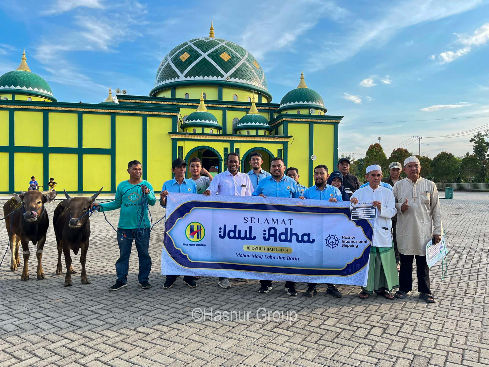
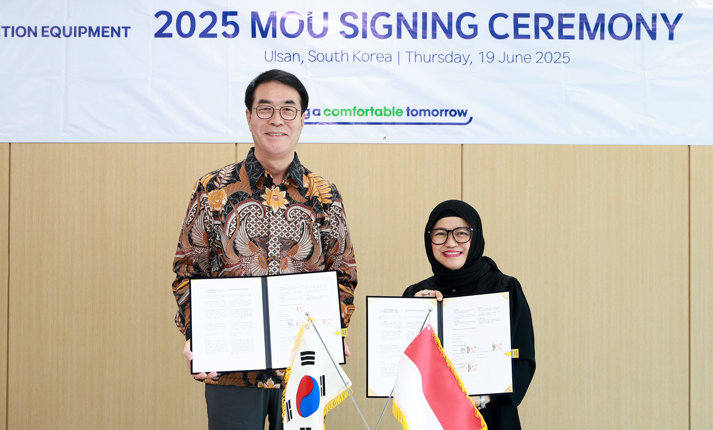
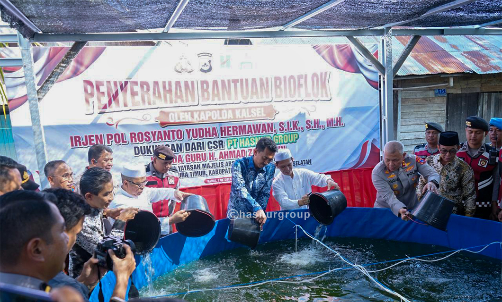

Latest Update
Hasnur Berbagi Qurban Jangkau Puluhan Kabupaten dan Kota
Program CSR yang menjangkau puluhan kabupaten/kota di delapan provinsi saat momentum Iduladha 1447 H.
Jakarta, 5 Juni 2026

Komitmen pendiri, H. Abdussamad Sulaiman HB dan Hj. Nurhayati, untuk terus mengabdi dan membangun bersama masyarakat Kalimantan Selatan — "Banua" — menjadi fondasi perjalanan Hasnur Group hingga hari ini.
H. Abdussamad Sulaiman HB & Hj. Nurhayati
Pendiri Hasnur Group
Konten sementara memakai dokumentasi yang tersedia — akan digantikan feed dinamis dari CMS Publikasi.

Hasnur Group didirikan oleh pengusaha asli Kalimantan, H. Abdussamad Sulaiman HB, bersama istrinya Hj. Nurhayati, yang memulai usaha di bidang angkutan sungai pada tahun 1966.
Nama "HASNUR" merupakan gabungan inisial nama keduanya — HAS (H. Abdussamad Sulaiman) + NUR (Nurhayati).
SelengkapnyaSetiap tonggak perjalanan Hasnur Group dari tahun ke tahun, 1966–2023.
Mulai usaha angkutan sungai.
Mulai usaha kehutanan.
Pendirian klub sepak bola PS Barito Putera.
Mulai usaha pertambangan dan perkebunan kelapa sawit.
Memiliki jalan hauling dan pelabuhan batubara di Tapin, Kalsel.
Ekspansi ke bidang jasa/services.
Mulai usaha di bidang media.
Ekspansi perkebunan sawit dan pengangkutan batubara via laut.
Pendirian Yayasan Hasnur Centre, tambahan lahan sawit di Barito Kuala.
Ekspansi ke bidang teknologi informasi.
Peresmian pabrik kelapa sawit di Tapin dan pelabuhan batubara di Barito Selatan.
Ekspansi ke jasa konstruksi.
Penguatan bisnis logistik dan energi terbarukan.
Anak perusahaan PT Hasnur International Shipping IPO di BEI (kode saham: HAIS), 1 September 2021.
Restrukturisasi menjadi 7 Strategic Business Unit (SBU): Logistic, Agro Forestry, Energy, Technology & Services, Education, Consumer, Investment.
Mulai usaha angkutan sungai.
Mulai usaha kehutanan.
Pendirian klub sepak bola PS Barito Putera.
Mulai usaha pertambangan dan perkebunan kelapa sawit.
Memiliki jalan hauling dan pelabuhan batubara di Tapin, Kalsel.
Ekspansi ke bidang jasa/services.
Mulai usaha di bidang media.
Ekspansi perkebunan sawit dan pengangkutan batubara via laut.
Pendirian Yayasan Hasnur Centre, tambahan lahan sawit di Barito Kuala.
Ekspansi ke bidang teknologi informasi.
Peresmian pabrik kelapa sawit di Tapin dan pelabuhan batubara di Barito Selatan.
Ekspansi ke jasa konstruksi.
Penguatan bisnis logistik dan energi terbarukan.
Anak perusahaan PT Hasnur International Shipping IPO di BEI (kode saham: HAIS), 1 September 2021.
Restrukturisasi menjadi 7 Strategic Business Unit (SBU): Logistic, Agro Forestry, Energy, Technology & Services, Education, Consumer, Investment.

Mendukung kebutuhan logistik internal grup maupun mitra eksternal.

Berawal dari jasa penarikan rakit kayu di DAS Barito, kini mencakup perkebunan dan kehutanan.

Fokus pertambangan dengan visi menjadi pemain terkemuka di Indonesia, kapasitas produksi terus tumbuh.

Menaungi unit bisnis pengembangan teknologi dan layanan.

Mengembangkan pendidikan bertaraf internasional dengan pendekatan kearifan lokal dan religius.

Membawahi bisnis media, gaya hidup, dan kesehatan.

Mendukung pengembangan bisnis grup melalui investasi internal maupun eksternal.

Program CSR yang menjangkau puluhan kabupaten/kota di delapan provinsi saat momentum Iduladha 1447 H.
Jakarta, 5 Juni 2026

Kolaborasi untuk pengembangan solusi pertambangan.

Bekerja sama dengan Polda Kalimantan Selatan.
2 Oktober 2025